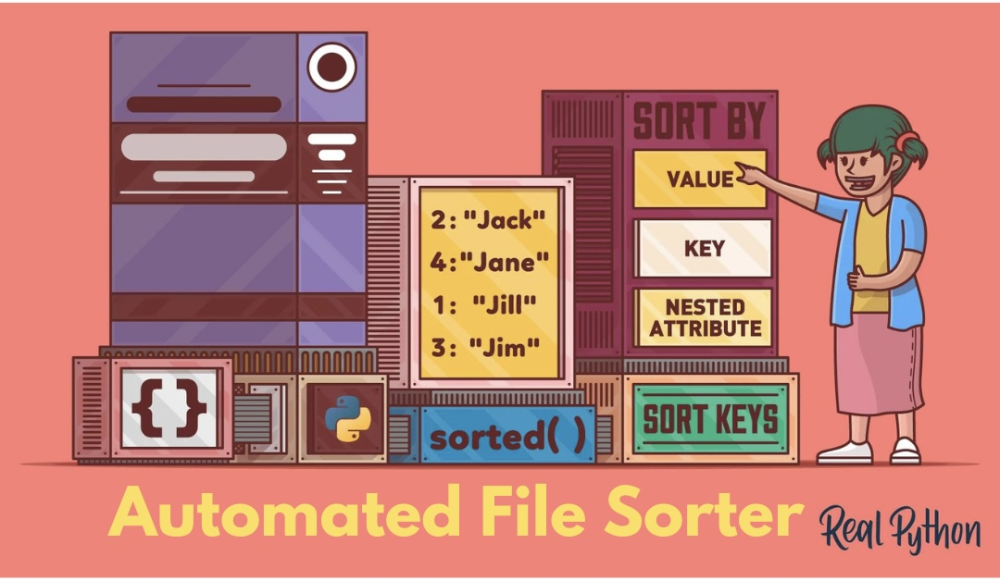

This project is a real-time solution designed to save you time by automatically sorting your files into organized folders. Keep your digital workspace tidy with this efficient and practical tool! Say goodbye to the hassle of manual file management and hello to a more organized and productive workflow.

Visual insights drive faster understanding and better decision-making. Explore my detailed data visualizations on Tableau Public. Each project showcases my ability to transform raw data into compelling stories, offering valuable perspectives and strategic insights through advanced analysis techniques.
.png)
The Heart Attack Predictor is a user-friendly Shiny app built with R, designed to predict the likelihood of heart disease using patient data. By leveraging a logistic regression model, the app provides real-time predictions to aid in early detection and prevention. Users can input various health parameters to assess heart disease risk quickly and efficiently.
Comprehensive analysis of global coal consumption trends using R. Includes data cleaning, transformation, and visualization to uncover insights. Features detailed visualizations and categorization for in-depth analysis.

Every second counts in an emergency. Discover how I use R programming to forecast ER patient arrivals at Pleasant Hospital, enhancing care and reducing wait times. Explore my data-driven approach for smarter hospital management!